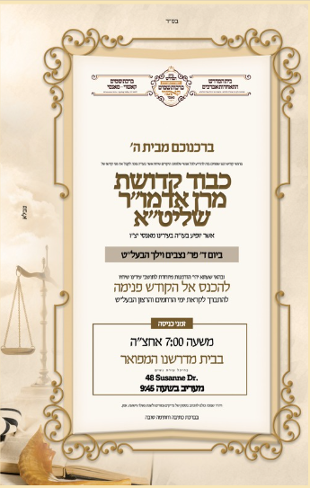

Notice boardמודעות
Latest announcementלעצטע מודעה
The Kashau Rebbe shlit״a will be in Monsey on Wednesday of Parshas Nitzavim–Vayeilech, with a special opportunity to come in for a brocha before the Yomim Noraim. Entry from 7:00 PM at our beis medrash, 48 Susanne Dr. Maariv at 9:45.
בס״ד
ברכנוכם מבית ה׳
כבוד קדושת מרן אדמו״ר שליט״א
אשר יופיע בעז״ה בעיר״ש מאנסי יצ״ו
ביום ד׳ פר׳ נצבים וילך הבעל״ט
להכנס אל הקודש פנימה
להתברך לקראת ימי הרחמים והרצון הבעל״ט
זמני כניסה: משעה 7:00 אחה״צ
בבית מדרשנו המפואר · 48 Susanne Dr.
מעריב בשעה 9:45
בברכת כתיבה וחתימה טובה
View original noticeזעט די ארגינעלע מודעה
